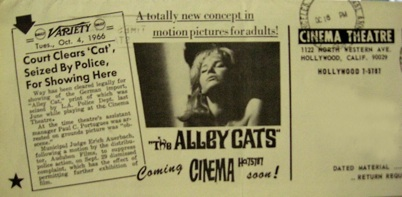

Presentations: Adam Hyman

In 1963-1965, the Cinema Theater’s Movies ‘Round Midnight drew houses of 500 people at midnight to mixes of experimental and independent films programmed by John Fles and Mike Getz. A 1964 screening of Kenneth Anger’s Scorpio Rising led to their arrests by the LAPD and an obscenity trial. By 1967, the Cinematheque 16, on the Sunset Strip, could run a week-long Kenneth Anger retrospective without difficulty. How did these theaters serve as hallmarks of 1960s experimental exhibition? What other venues were screening? How did their programs, and the hurdles they faced, reflect the social and cultural changes of Southern California through the 1960s?
Adam Hyman is the Executive Director and Programmer for Los Angeles Filmforum. He has programmed over 200 shows since 1998, including historical retrospectives, tributes, and contemporary practitioners. Programming highlights include Shirley Clarke retrospective in 1998; a tribute to the late artist Nam June Paik, held at LACMA and co-presented with the Korean Cultural Center; several programs of animated documentaries, and experimental animation. Hyman has been a documentary filmmaker for the past fourteen years, producing and/or writing a variety of historical and archaeological documentaries that have aired on the PBS, the History Channel, the Learning Channel, and others. He recently co-produced Worse than War, a documentary on genocide and mass murder, which aired on PBS in April 2010. He co-produced the 2007 Oscar-nominated and Emmy-winning feature documentary Operation Homecoming: Writing the Wartime Experience and The Old, Weird America: Harry Smith’s Anthology of American Folk Music. He is currently directing and producing a film on R&B sax legend Big Jay McNeely. A native Angeleno, Hyman has an MFA in Film Production from the University of Southern California School of Cinema-Television.
Censorship and Liberation: The Exhibition of the Avant-Garde in 1960s Los Angeles
This presentation is part of the panel entitled Shopper's Market: Exhibition, Distribution and Canonization, being held on Saturday November 13, 2010 9:30am - 12:00pm in the Eileen Norris Cinema Theatre.
Left: Raymond Rohauer, ca. 1950s
Image courtesy of Tim Lanza
